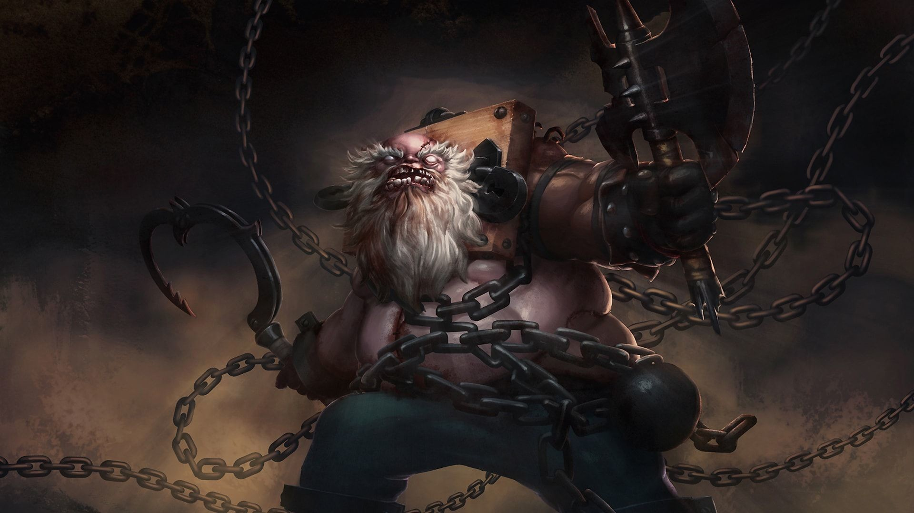

About Pudge
Pudge is a melee strength hero in Dota2. Pudge is potentially one of the strongest gankers and disablers in the entire game, with his combo of three active abilities proving more than sufficient to kill fragile enemy heroes in the early and mid-game
Chains of the Black Death
Pudge's Characteristics
- He is a bad-ass
- He has one passive ability from which he gains strength and health regenration
- His ultimate can pierce magic immunity
Abilities
Pudge has four abilities from which 3 are active
- Meat hook
- Rot
- Flesh heap
- Dismember
Launches a bloody hook toward a unit or location. The hook will snag the first unit it encounters, dragging the unit back to Pudge and dealing damage if it is an enemy.
A toxic cloud that deals intense damage and slows movement--harming not only enemy units but Pudge himself.
Gives Pudge increased health regeneration, as well as bonus strength that increases each time Pudge kills an enemy Hero or it dies in his vicinity. Flesh Heap is retroactive, meaning it can gain charges before it is skilled, which then become active.
Channeled - Pudge chows down on an enemy unit, disabling it and dealing damage over time. Pudge gets healed for the same amount he damages. Lasts longer on creeps.
Allies
There are few heroes who works well with Pudge.